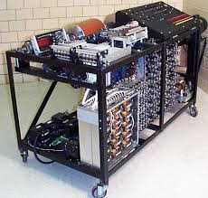

L'ABC
Nel 1939 il Dr. John Vincent Atanasoff e Clifford E. Berry dell'Iowa State
University costruiscono l'Atanasoff Berry Computer (spesso chiamato ABC),
il primo computer digitale totalmente elettronico;
rappresenta uno dei maggiori passi avanti della storia dei calcolatori.
L'Atanasoff-Berry Computer introdusse molte innovazioni nel campo dei
calcolatori. Introdusse i numeri binari in un computer digitale
(lo Z3 utilizzava i numeri binari ma era un calcolatore elettromeccanico)
e la loro gestione, il calcolo parallelo, le memorie rigenerative e
una separazione tra dati e istruzioni.
Un computer era considerato una specie di macchina per fare i conti
molto velocemente, la naturale evoluzione delle calcolatrici usate
durante la seconda guerra mondiale. Era normale perforare una serie
di schede per fornire non solo l'input, ma anche i rudimenti di quello
che oggi prende il nome di sistema operativo.
Questi primi calcolatori erano molto lenti, ed era normale che
il risultato del calcolo venisse presentato varie ore, se non giorni, più tardi.
Tra un input e l'altro, inoltre, il computer rimaneva inattivo,
proprio come una macchina calcolatrice.
